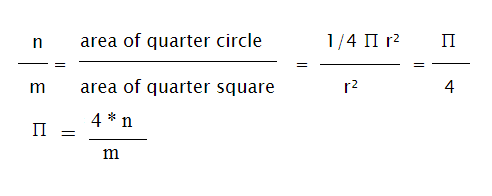

MONTE CARLO METHOD-
PI APPROXIMATION
SIMULATION:
Framerate:
Monte Carlo methods are a broad class of computational algorithms that rely on repeated random sampling to obtain numerical results.
METHOD:
To compute the value of PI:
- Draw a square, then inscribe a circle within it
- Uniformly scatter objects of uniform size over the square
- Count the number of objects inside the circle and the total number of objects
Now suppose you do m experiments and in n of those experiments, the random point chosen falls within the upper right quarter of the unit circle. Since the area of a circle is known to be pi*r^2 and the area of a square is r^2, the following equations hold:
